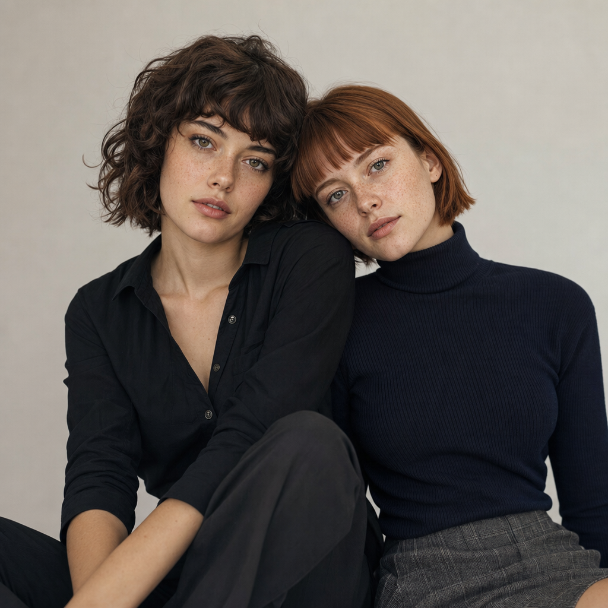

Анна Белова
ПроверенаРежиссёр полного метра и сериала. Дебют — «Антенна» (2019, «Послание к человеку»), полный метр — «Колыбель» (2022, главный приз «Окна в Европу»). Сейчас в производстве «После шторма» для Okko, параллельно — препрод «Тихого января» для Кинопоиск Студии. Член Союза кинематографистов России.
Сейчас в работе

Режиссёрский подход
«Меня интересуют истории, в которых тишина громче слов. Камера ждёт, актёр живёт, музыка появляется в последнюю очередь. Я не верю в драматургию через диалог — верю в драматургию через паузу и ландшафт».
Жанры: драма, психологический триллер. Любимые соавторы: оператор Дмитрий Карпов, монтажёр Артём Сухов.